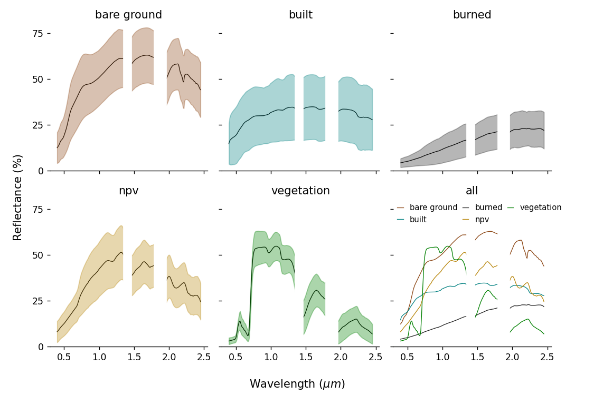
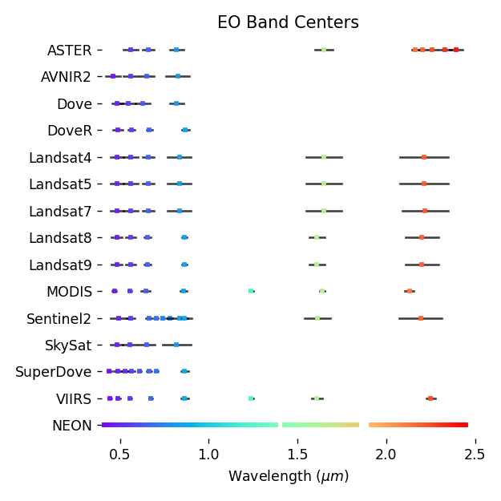

Data Sources¶
earthlib provides a collection of spectral measurments and models from a range of data sources, as well as tools for resampling this collection to match the wavelenghts of common optical imaging sensors.
Source libraries¶
The following data sources were filtered and resampled prior to inclusion in earthlib.
- Vegetation spectra modeled using PROSAIL (using PyPROSAIL)
- World Agroforestry (ICRAF) Global Soil Spectral Library
- The Joint Fire Science Program
- UCSB's Urban Reflectance Spectra
- UW/BNL/NASA HySPIRI airborne calibration spectra
- USGS Spectral Library Version 7
Land cover types¶
Below are plots for the primary land cover types included in earthlib.

Supported sensors¶
earthlib supports spectral resampling to a wide range of earth observing sensors. Below is a plot with the band centers and ranges for the sensors supported by default.

Here, the black lines indicate the full-width at half-max (FWHM) of each band, and the colored squares mark the center wavelength for each band.
NEON, an imaging spectrometer, measures the full shortwave spectrum (400-2500 nm), using over 400 spectral bands to measure continuous spectral variation.
For sensors not specified here, users can define their own sensor specification using the earthlib.sensors.Sensor() class. The API Walkthrough has an example.
Measurement units¶
The earthlib spectral library is provided in units of surface reflectance, scaled as floating point values from 0-1.
Data from commonly-used sensors—like Landsat, Sentinel, and MODIS—are often provided as surface reflectance products.
These datasets can be unmixed once the data have been rescaled: they're typically provided as unsigned integer values from 0-10000.
A few data sources are not provided as surface reflectance products: ASTER data are provided in radiance (a physical measurement unit, uncorrected for atmospheric composition); ALOS-AVNIR-2 data are provided in DN (raw sensor measurments).
One would have to first convert from DN to radiance (in the case of ALOS-AVNIR-2) then apply atmospheric correction (to convert from radiance to reflectance). This workflow isn't directly supported by earthlib.
Sensors unavailable in Earth Engine¶
earthlib provides sensor definitions for NEON data (a set of airborne imaging spectrometers) and for a set of data from Planet's Dove constellation (Dove, Dove-R, SuperDove). These are not available as default Earth Engine collections.
You can, however, upload data from these providers as custom user data or from community-contributed datasets. So you can unmix these datasets if you have access to them as Earth Engine Image/Collection assets, but no default collection ID is provided by earthlib.
Next, learn more about the how the earthlib API works.